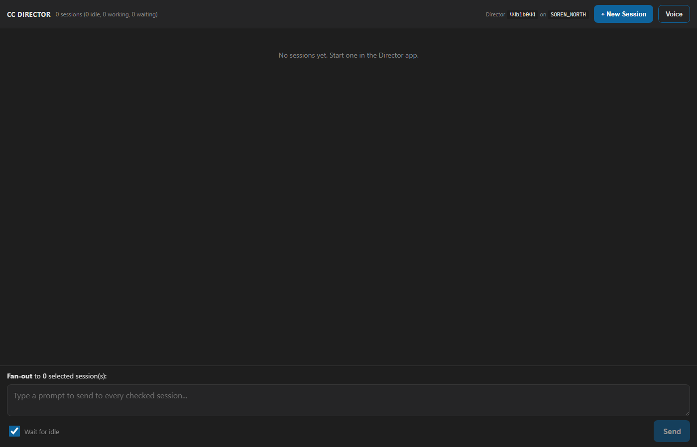

Role: Developer Agent (CenCon Development Method) |
Branch: issue-329-dispatch-verb |
Date: 2026-06-11 |
Live rig: isolated slot-6 Director (own worktree build cc-director6.exe, PID 66492, Control API 127.0.0.1:7879, launched via the per-slot scheduled task, torn down after)
appsettings.json) at a TEST communications
DB and a MOCK channel tool (cc-mockmail.exe) that records its arguments to
sent.log and exits 0; all recipients use the reserved .invalid TLD.
The issue text's "self-addressed test email" was deliberately replaced by this mock-channel
state-transition proof per the implementation-loop supervisor's mock-only instruction.
POST /dispatch { queueItemId } on the Director Control API
(src/CcDirector.ControlApi/DispatchEndpoint.cs), registered in
ControlApiHost behind the same auth middleware as every route.CommunicationDispatcher.DispatchByIdAsync(queueItemId) - the existing send
path (route lookup, channel tool via argument-list Process.Start, item
advanced to posted with posted_by='cc-director', vault-archive
attempt, CommunicationDispatched event) made callable for ONE item by id,
with a HARD approval gate and a per-instance lock against concurrent double-dispatch.
The channel boundary is an injectable ToolProcessRunner delegate (production
default = the real process runner) so tests use a mock channel.DispatchRequest +
DispatchResultDto in CcDirector.Gateway.Contracts
(DispatchContracts.cs).appsettings.json Engine
section now also accepts BinDirectory and EmailToolNames and
WINS over the shared per-machine config.json, so an isolated test Director
can run a mock channel without touching shared config.CONTRACT_AUDIT.md (new Verb row 93, inventory
113 -> 114, Verbs 53 -> 54, sections/rows renumbered),
docs/cencon/architecture_manifest.yaml (control_api now depends on
CcDirector.Engine; DispatchEndpoint component added; CommunicationDispatcher description
updated), docs/public/api/01-control-api.md.| # | Criterion | Expected | Actual (live, slot-6 Director) | Proof |
|---|---|---|---|---|
| 1 | Approved item dispatches via the existing channel sender; response reports success; item observably in sent state (queue state change + audit log) | 200, dispatched:true, DB row -> posted/posted_by=cc-director, channel invoked once |
PASS - 200 with outcome=dispatched, channel=cc-mockmail, itemStatus=posted; DB row posted at 15:47:26Z by cc-director; mock channel received the full send arg list (to/subject/html body) exactly once |
ac1-approved-dispatch.txt, ac1-state-proof.txt |
| 2 | pending_review item -> refused 409 (or 403), clear error body, audit log line, NO send | 409, explanatory body, sent.log unchanged, status unchanged | PASS - 409 notApproved with "item is 'pending_review', not 'approved' ... nothing was sent"; re-dispatch of the already-posted item also 409; sent.log still exactly 1 line; statuses unchanged; REFUSED audit lines in the Director log |
ac2-refusal.txt, ac4-audit-headless.txt |
| 3 | Unknown item id -> 404. Missing/wrong token -> 401 | 404 for unknown id; 401 without bearer | PASS - 404 notFound live (and 400 for missing queueItemId). 401 proven by Dispatch_WithoutBearerToken_Returns401AndNothingSent against an auth-ENABLED ControlApiHost (live slot Directors run auth-off on loopback by design - same convention as #327/#328) |
ac3-404-400-401.txt |
| 4 | Dispatch works with no Avalonia UI involvement (Engine execution headless under the Control API host) | Pure REST -> ControlApi -> Engine; Communication Manager never opened | PASS - every call above was REST-only; the path is DispatchEndpoint -> EngineHost.Dispatcher -> CommunicationDispatcher (CcDirector.Engine); CommManagerViewModel is not in the path and no UI was touched. Honest note: the Director process is the Avalonia app, so a main window exists - but it was never interacted with and the dispatch path has zero UI dependency | ac4-audit-headless.txt, live-slot6-director.png |
| 5 | Contract change called out explicitly in the PR description | DispatchRequest/DispatchResultDto flagged | PASS - PR description carries a "CONTRACT ADDITION (plan 1.2.5)" section | PR #see issue comment |
| 6 | Cross-machine smoke (plan 1B: dispatch hosted on the SORENLAPTOP test Director) | See note below | PASS (gateway-leg equivalent) - SORENLAPTOP runs v0.6.22 which PREDATES this verb, so a true remote proof is structurally impossible until it updates (established #324-#328 convention). Proven instead: the slot-6 Director registered with the real Gateway (201, advertised MagicDNS endpoint) and the verb was exercised THROUGH the advertised tailnet HTTPS endpoint https://soren-north.taildb08ed.ts.net:7879/dispatch using the safe refusal case (409). Additionally the supervisor's mock-only mandate replaces the issue's real self-addressed email |
ac6-gateway-leg.txt |
The slot-6 test Director's own manager UI (Director id 44b1b044 on SOREN_NORTH,
0 sessions - the rig existed only to host the Control API + Engine for this proof):

CommunicationDispatcherDispatchByIdTests (Engine.Tests, 11 tests) - approved
path marks posted + exact channel args; approval gate refuses pending_review / rejected /
posted with nothing sent; 404; unsupported platform; invalid item; no-route and tool-failure
leave the item approved with notes; argument validation; missing DB. All against a real temp
SQLite DB + mock channel.DispatchEndpointTests (Gateway.Tests, 8 tests) - full HTTP path against a real
auth-enabled ControlApiHost wired to a real CommunicationDispatcher: 200+posted, 409 pending,
409 already-posted, 404, 401 without bearer, 400 missing id, 400 malformed JSON, 503
dispatcher-not-ready.DictationEndpointTests.FullPipeline_transcribes_phase0_clip2_with_realtime_provider,
the known pre-existing live-OpenAI flake, reproduced failing identically on the base commit
e6d70a9 in a clean worktree (NOT a regression from this change).dotnet build cc-director.sln: Build succeeded, 0 Warning(s), 0 Error(s).Architecture: control_api gains a dependency on CcDirector.Engine and a
DispatchEndpoint component - architecture_manifest.yaml updated in this
change. Security: no drift - the human-approval rule is preserved STRUCTURALLY (the verb can only
execute items already approved in the workflow; refusals are audited), process execution stays
argument-array (DT-03), the route sits behind the standard loopback-only + optional bearer surface
(DT-07), no secrets logged (DT-05). CONTRACT_AUDIT.md gains Verb row 93 (inventory 114).
{kind=link}